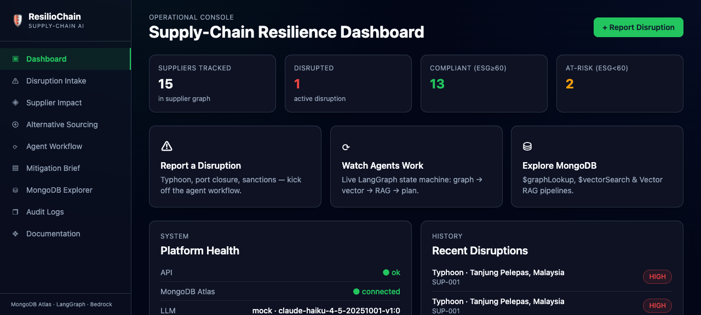
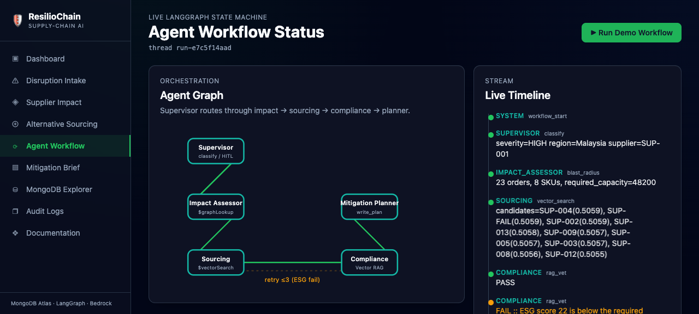
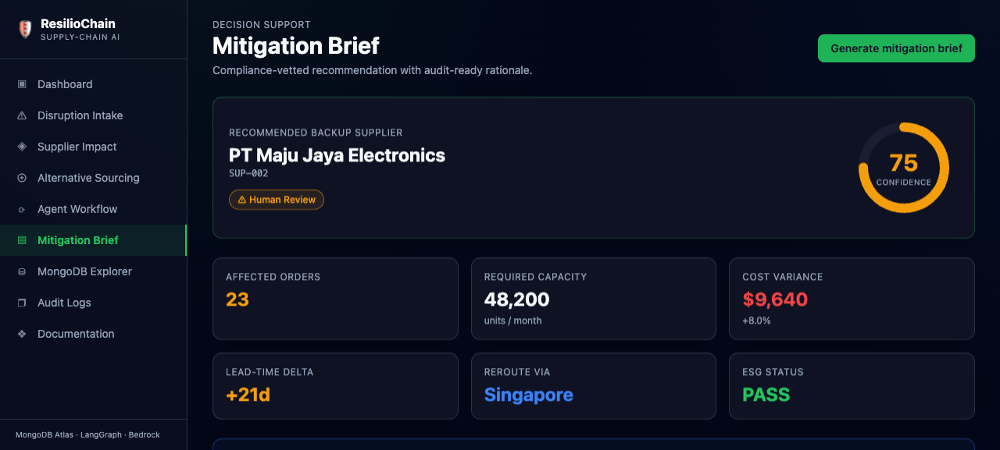

Technical Documentation — Agentic AI for supply-chain disruption response, powered by MongoDB Atlas + LangGraph + AWS Bedrock (Claude).
When a typhoon closes a port, a war disrupts a region, or sanctions block a supplier, ResilioChain ingests the disruption alert and runs a five-agent AI workflow that:
$graphLookup over an order → supplier dependency graph (Impact Assessor).$vectorSearch, hard-filtered by required capacity (Sourcing).Every decision is checkpointed and written to an append-only audit trail. MongoDB Atlas is both the system of record and the AI retrieval engine — agents touch the database only through a fixed set of MCP tools.
| Layer | Tech |
|---|---|
| UI | Next.js 14, React, Tailwind, Framer Motion |
| Orchestration | LangGraph multi-agent state machine (Python) |
| Backend / API | FastAPI |
| Data & AI retrieval | MongoDB Atlas — $graphLookup, $vectorSearch, Vector RAG, checkpoints |
| LLM | AWS Bedrock — Claude Haiku 4.5 (provider-abstracted) |
┌──────────────────────────────────────────────────────────────────────┐
│ 1. EXTERNAL TRIGGER & OBSERVABILITY │
│ Disruption alert (API / UI / external system) ──► workflow start │
│ Telemetry, traces, agent decisions ──► audit_logs (+ console logs) │
└───────────────────────────────┬──────────────────────────────────────┘
▼
┌──────────────────────────────────────────────────────────────────────┐
│ 2. LANGGRAPH ORCHESTRATION LAYER (Python state machine) │
│ ┌────────────────┐ decides next node on DisruptionState │
│ │ A. SUPERVISOR │◄──────────────────────────────────────┐ │
│ └───────┬────────┘ │ │
│ classify │ route │ │
│ ▼ │ │
│ ┌────────────────────┐ ┌───────────────┐ ┌─────────────┐ │ │
│ │ B. Impact Assessor │──►│ C. Sourcing │──►│ D. Compliance│─┘ │
│ │ $graphLookup │ │ $vectorSearch │◄──│ Vector RAG │ retry │
│ └────────────────────┘ └───────────────┘ └──────┬──────┘ (≤3) │
│ ▼ │
│ ┌──────────────────────────┐ │
│ │ E. Mitigation Planner │ │
│ │ deterministic confidence │ │
│ │ + HITL gate │ │
│ └──────────────────────────┘ │
└───────────────────────────────┬──────────────────────────────────────┘
▼ (every node reads/writes via MCP tools)
┌──────────────────────────────────────────────────────────────────────┐
│ 3. MONGODB ATLAS — THE CORE │
│ M1 orders (graph) M2 suppliers (vector) M3 compliance (RAG) │
│ M4 agent_checkpoints + mitigation_plans audit_logs disruptions │
└──────────────────────────────────────────────────────────────────────┘
▲
┌──────────────────────────────────────────────────────────────────────┐
│ 4. AWS BEDROCK LLM LAYER — Claude Haiku 4.5 (provider-abstracted) │
│ Each agent calls the LLM for classification / extraction / planning │
└──────────────────────────────────────────────────────────────────────┘
▲
┌──────────────────────────────────────────────────────────────────────┐
│ 5. ENTERPRISE UI — Next.js dashboard, live workflow stream, brief │
└──────────────────────────────────────────────────────────────────────┘
MCP tools (data-access boundary) — agents may ONLY touch MongoDB through these: blast_radius_query, supplier_vector_search, compliance_rag_query, read_checkpoint/write_checkpoint, write_plan/update_plan_status.
A single TypedDict threaded through every node and persisted as checkpoints (M4). Defined in backend/app/agents/state.py.
| Field | Set by | Meaning |
|---|---|---|
thread_id | intake | workflow identity |
alert_text | intake | raw disruption description |
severity | Supervisor | LOW / MEDIUM / HIGH / CRITICAL |
affected_region, affected_supplier_id, affected_route | Supervisor | extracted scope |
affected_skus[], impacted_orders[], required_capacity | Impact Assessor | blast radius (capacity = SUM of quantity_remaining) |
candidate_suppliers[], sourcing_query | Sourcing | vector-matched, capacity-filtered backups |
compliance_results[], vetted_suppliers[], rejected_supplier_ids[] | Compliance | per-supplier pass/fail + reasons |
compliance_retries | graph | loop counter (≤ COMPLIANCE_MAX_RETRIES) |
mitigation_brief, confidence_score, recommended_action | Planner | final output (AUTO_EXECUTE | HUMAN_REVIEW) |
status, error | graph | running | complete | halted_no_impact | escalated_hitl |
Database: resiliochain (Atlas cluster0). Collection names defined in backend/app/config.py.
orders (source for $graphLookup)| Field | Type | Notes |
|---|---|---|
_id | ObjectId | auto |
order_number | String | ORD-1044 … ORD-1073, unique |
status | String | active (only active orders in blast radius) |
sku_ids | String[] | e.g. ["MCU-32X","SEN-IMU9","CAP-470UF"] |
supplier_id | String | matches a suppliers._id — graph edge |
quantity_ordered | Number | 5,000–20,000 |
quantity_remaining | Number | 80–95% of ordered |
route | Object | { origin, destination, via_port } |
bom | Object | polymorphic BOM { part_number, spec, grade } |
depends_on | String[] | [supplier_id] — the $graphLookup edge field |
unit_price | Number | original price (cost-variance calc) |
created_at | Date | within last 90 days |
Indexes: {supplier_id:1}, {status:1}, {depends_on:1}, {order_number:1} (unique).
suppliers (source for $vectorSearch)| Field | Type | Notes |
|---|---|---|
_id | String | SUP-001 (disrupted) … SUP-020 |
name | String | e.g. PT Maju Jaya Electronics |
capabilities | String[] | ["automotive-grade microcontrollers","32-bit MCU","AEC-Q100 certified"] |
capacity_units_month | Number | ≥ 48,200 for ≥2 backups (hard filter) |
geo_region | String | Indonesia, Malaysia, South Korea, Vietnam |
lead_time_days | Number | 14–45 |
esg_score | Number | SUP-FAIL = 22; others 65–92 |
certifications | String[] | ["ISO-14001","carbon-neutral-2024"] |
unit_price | Number | 5–15% above original |
embed_text | String | name + capabilities (embedding input) |
embedding | Float[] | auto-generated by Atlas Voyage AI (autoEmbed) — do not populate manually |
last_updated | Date | now |
compliance_policies (source for Vector RAG)| Field | Type | Notes |
|---|---|---|
_id | ObjectId | auto |
source_doc | String | 2025_ESG_Guidelines.pdf, Trade_Sanctions_2025.pdf, Labour_Standards.pdf |
chunk_index | Number | 0-based within source |
text | String | 300–500 token policy chunk |
policy_type | String | ESG | trade_sanction | labour | carbon |
embedding | Float[] | auto-generated (Voyage AI) |
effective_date | Date | 2025-01-01 |
agent_checkpoints + mitigation_plansagent_checkpoints — LangGraph thread memory: { thread_id, ts, node, state }.mitigation_plans — written by the Planner via write_plan: { plan_id, thread_id, affected_orders_count, backup_supplier, reroute_via, lead_time_delta_days, cost_variance_usd, cost_variance_pct, esg_status, confidence_score, recommended_action, options[], status, created_at }.audit_logs & disruptionsaudit_logs — append-only decision trail: { ts, thread_id, agent, action, input_summary, output_summary, level }.disruptions — intake records: { _id, alert_text, region, product, supplier_id, issue, created_at, status }.supplier_vector_index (type vectorSearch, on suppliers):
embedding — autoEmbed (Voyage AI voyage-4) over embed_text, cosine similarity.filter fields: capacity_units_month, geo_region, esg_score.policy_vector_index (type vectorSearch, on compliance_policies):
embedding — autoEmbed (Voyage AI) over text.filter field: policy_type.EMBEDDING_MODE=autoembed: Atlas manages Voyage AI embeddings at index/query time (insert only embed_text/text). Fallback explicit: seed.py calls Voyage AI (VOYAGE_API_KEY) to populate embedding and the index switches to a plain vector field. Query stages are identical either way.$graphLookup blast radiusblast_radius_query.py: traverse orders.depends_on → suppliers._id, keep orders whose chain includes the disrupted supplier, aggregate impacted orders, unique SKUs, and required_capacity = SUM of quantity_remaining.
pipeline = [
{"$match": {"status": "active"}},
{"$graphLookup": {
"from": settings.COL_SUPPLIERS,
"startWith": "$depends_on",
"connectFromField": "depends_on",
"connectToField": "_id",
"as": "dependency_chain",
}},
{"$match": {"dependency_chain._id": affected_supplier_id}},
{"$group": {
"_id": None,
"impacted_orders": {"$push": {
"order_number": "$order_number", "sku_ids": "$sku_ids",
"quantity_remaining": "$quantity_remaining",
"route": "$route", "unit_price": "$unit_price",
}},
"all_skus": {"$push": "$sku_ids"},
"required_capacity": {"$sum": "$quantity_remaining"},
}},
]
Empty result → {affected_skus:[], impacted_orders:[], required_capacity:0} and the workflow halts (halted_no_impact).
$vectorSearch sourcing with capacity filtersupplier_vector_search.py: semantic recall over suppliers with a hard capacity filter enforced at the query level (not by the LLM). The disrupted supplier/region is excluded after retrieval (_id cannot be a vector-filter field).
vfilter = {"capacity_units_month": {"$gte": int(required_capacity)}}
# autoembed mode (default)
stage = {"$vectorSearch": {
"index": settings.IDX_SUPPLIER_VECTOR,
"path": "embed_text",
"query": {"text": query_text},
"filter": vfilter,
"numCandidates": 100,
"limit": top_k, # default 3
}}
# explicit mode -> "path": "embedding", "queryVector": embed_query(query_text)
pipeline = [stage,
{"$match": {"_id": {"$ne": exclude_supplier_id},
"geo_region": {"$ne": exclude_region}}}, # post-filter
{"$project": {"_id": 1, "name": 1, "capabilities": 1,
"capacity_units_month": 1, "geo_region": 1,
"lead_time_days": 1, "esg_score": 1, "certifications": 1,
"unit_price": 1,
"similarity_score": {"$meta": "vectorSearchScore"}}},
]
compliance_rag_query.py: build a query from a candidate's geo_region + capabilities, retrieve the most relevant policy chunks (optionally by policy_type), then the Compliance Agent reasons over ESG / sanctions / labour / carbon.
query_text = (f"{region} supplier ESG labour sanctions carbon compliance for "
f"automotive electronics {caps}")
vs = {"index": settings.IDX_POLICY_VECTOR, "path": "text",
"query": {"text": query_text}, "numCandidates": 100, "limit": top_k} # default 5
if policy_type:
vs["filter"] = {"policy_type": policy_type}
pipeline = [
{"$vectorSearch": vs},
{"$project": {"_id": 0, "source_doc": 1, "policy_type": 1, "text": 1,
"score": {"$meta": "vectorSearchScore"}}},
]
_vs.run_vector_pipeline, which retries on Voyage AI rate-limit errors (free tier: 3 RPM / 10K TPM) with ~21s spacing, up to 4 attempts.Five LangGraph nodes (backend/app/agents/). Structured JSON in/out, each writes to audit_logs, fails gracefully. Models default to Bedrock Claude Haiku 4.5.
| Agent | Model | Role | MCP tools |
|---|---|---|---|
| A. Supervisor | Sonnet→Haiku | Classify severity, extract scope, route; 2nd pass compiles brief + HITL decision | read/write_checkpoint, write_plan |
| B. Impact Assessor | Haiku | Blast radius via $graphLookup; aggregate required_capacity | blast_radius_query |
| C. Sourcing | Haiku | $vectorSearch backups with hard capacity filter; top-3 | supplier_vector_search |
| D. Compliance | Haiku | Vector RAG over policies; validate each candidate iteratively | compliance_rag_query |
| E. Mitigation Planner | Sonnet→Haiku | Select top vetted supplier, cost variance, deterministic confidence, write plan | write_plan, update_plan_status, read_checkpoint |
graph.py)g.set_entry_point("supervisor")
g.add_edge("supervisor", "impact_assessor")
g.add_conditional_edges("impact_assessor", _after_impact,
{"halt": END, "sourcing": "sourcing"})
g.add_edge("sourcing", "compliance")
g.add_conditional_edges("compliance", _after_compliance,
{"planner": "planner", "retry_sourcing": "sourcing"})
g.add_edge("planner", END)
def _after_impact(state):
return "halt" if state.get("status") == "halted_no_impact" else "sourcing"
def _after_compliance(state):
if state.get("vetted_suppliers"):
return "planner"
if state.get("compliance_retries", 0) < settings.compliance_max_retries \
and state.get("candidate_suppliers"):
return "retry_sourcing" # loop back for the next-best candidate
return "planner" # planner escalates to HITL (no vetted suppliers)
COMPLIANCE_MAX_RETRIES) → planner escalates to HITL.impacted_orders[], candidate_suppliers[], compliance_results[] are populated.recursion_limit of 25 guards against unexpected loops.Computed in backend/app/agents/confidence.py — never produced by the LLM. Vector similarity is a weak signal for short supplier texts, so it is used only for candidate recall, not the final score.
def compute_confidence(*, esg_score, cost_variance_pct, capacity_units_month,
required_capacity, lead_time_days, compliance_passed) -> int:
esg_c = _clamp(esg_score / 100.0)
cost_c = _clamp(1.0 - abs(cost_variance_pct) / 40.0)
headroom = ((capacity_units_month - required_capacity) / required_capacity
if required_capacity else 0.0)
cap_c = _clamp(headroom)
lead_c = _clamp(1.0 - lead_time_days / 60.0)
comp_c = 1.0 if compliance_passed else 0.0
score = 100.0 * (0.35*esg_c + 0.30*cost_c + 0.15*cap_c + 0.10*lead_c + 0.10*comp_c)
return int(round(score))
def decide_action(confidence, esg_score) -> str:
if confidence >= settings.confidence_auto_threshold and esg_score >= 60:
return "AUTO_EXECUTE"
return "HUMAN_REVIEW"
AUTO_EXECUTE only if confidence ≥ CONFIDENCE_AUTO_THRESHOLD (default 85) AND esg_score ≥ 60; otherwise HUMAN_REVIEW (HITL) is mandatory.
.env) — key names only| Key | Purpose |
|---|---|
MONGODB_URI | Atlas connection string |
MONGODB_DB | database name (resiliochain) |
AWS_ACCESS_KEY_ID | Bedrock credential (or IAM role) |
AWS_SECRET_ACCESS_KEY | Bedrock credential |
AWS_REGION | Bedrock region (e.g. us-east-1) |
BEDROCK_MODEL_ID | default model id (Claude Haiku 4.5) |
BEDROCK_MODEL_SUPERVISOR | optional per-agent override |
BEDROCK_MODEL_PLANNER | optional per-agent override |
LLM_MODE | bedrock | mock |
EMBEDDING_MODE | autoembed | explicit |
VOYAGE_API_KEY | required only in explicit mode |
VOYAGE_MODEL | embedding model (voyage-4) |
API_HOST | bind host (0.0.0.0) |
API_PORT | API port (use 8010 — see note) |
CONFIDENCE_AUTO_THRESHOLD | auto-execute threshold (default 85) |
COMPLIANCE_MAX_RETRIES | sourcing↔compliance retry cap (default 3) |
NEXT_PUBLIC_API_BASE=http://localhost:8010 for the frontend.cd backend python -m venv .venv && source .venv/bin/activate pip install -r requirements.txt python -m app.db.seed # load demo dataset into Atlas python -m app.db.indexes # create vector + graph indexes python -m app.agents.graph --demo # run the Typhoon-Yagi scenario end-to-end uvicorn app.main:app --reload --host 0.0.0.0 --port 8010
cd frontend npm install NEXT_PUBLIC_API_BASE=http://localhost:8010 npm run dev # http://localhost:3000
Base URL: http://localhost:8010. All responses are clean JSON. Errors: { "error": { "code", "message" } } with the proper HTTP status.
| Method | Path | Purpose |
|---|---|---|
| GET | /health | Liveness + MongoDB ping + LLM mode |
| POST | /disruptions | Create a disruption alert → disruption_id |
| GET | /disruptions | List disruption alerts |
| GET | /disruptions/{id} | One disruption + latest workflow result |
| POST | /workflow/run | Run the LangGraph workflow (final state) |
| GET | /workflow/stream/{thread_id} | SSE stream of agent steps |
| GET | /suppliers/classify | Supplier impact classification view data |
| GET | /audit-logs | Audit trail (filter by thread_id) |
| GET | /checkpoints/{thread_id} | Checkpoint history for a thread |
| GET | /plans/{thread_id} | Mitigation plan(s) for a thread |
| GET | /pipelines | Metadata about the 3 MongoDB AI pipelines |
/health{ "status": "ok", "mongodb": "connected", "llm_mode": "bedrock",
"embedding_mode": "autoembed", "db": "resiliochain" }
/disruptions// request
{ "eventType": "Typhoon", "region": "Tanjung Pelepas, Malaysia",
"product": "Automotive-grade MCU", "supplier": "SUP-001",
"issue": "Port closed 72h — supplier has stock but cannot deliver" }
// response
{ "disruption_id": "665f0a...c21", "status": "created" }
/workflow/run// request
{ "alert_text": "Typhoon Yagi has closed the Port of Tanjung Pelepas for 72 hours. SUP-001 cannot deliver 23 active orders totalling 48,200 units of automotive-grade MCUs." }
// response — final DisruptionState
{
"thread_id": "demo-9f3a1c2b",
"severity": "HIGH",
"affected_supplier_id": "SUP-001",
"affected_region": "Malaysia",
"impacted_orders": [
{ "order_number": "ORD-1044", "sku_ids": ["MCU-32X"],
"quantity_remaining": 4200, "unit_price": 3.10 }
],
"required_capacity": 48200,
"candidate_suppliers": [
{ "supplier_id": "SUP-FAIL", "similarity_score": 0.51,
"geo_region": "Vietnam", "esg_score": 22 },
{ "supplier_id": "SUP-002", "name": "PT Maju Jaya Electronics",
"similarity_score": 0.49, "geo_region": "Indonesia", "esg_score": 88 }
],
"compliance_results": [
{ "supplier_id": "SUP-FAIL", "passed": false,
"fail_reasons": ["Vietnam labour/ESG risk"] },
{ "supplier_id": "SUP-002", "passed": true }
],
"vetted_suppliers": [ { "supplier_id": "SUP-002", "esg_score": 88 } ],
"mitigation_brief": {
"plan_id": "PLAN-7c2a", "affected_orders_count": 23,
"backup_supplier": "SUP-002", "backup_supplier_name": "PT Maju Jaya Electronics",
"reroute_via": "Port of Tanjung Priok", "lead_time_delta_days": 6,
"cost_variance_usd": 33740, "cost_variance_pct": 7.0,
"esg_status": "PASS", "confidence_score": 88,
"recommended_action": "AUTO_EXECUTE", "options": []
},
"confidence_score": 88,
"recommended_action": "AUTO_EXECUTE",
"status": "complete"
}
/workflow/stream/{thread_id} (SSE)event: step
data: {"agent":"supervisor","action":"classify","severity":"HIGH"}
event: step
data: {"agent":"impact_assessor","action":"blast_radius","impacted_orders":23,"required_capacity":48200}
event: step
data: {"agent":"sourcing","action":"vector_search","candidates":3}
event: step
data: {"agent":"compliance","action":"vet","supplier_id":"SUP-FAIL","passed":false}
event: step
data: {"agent":"compliance","action":"vet","supplier_id":"SUP-002","passed":true}
event: done
data: {"status":"complete","recommended_action":"AUTO_EXECUTE","confidence_score":88}
/audit-logs?thread_id=...[
{ "ts": "2026-06-30T10:02:11Z", "thread_id": "demo-9f3a1c2b",
"agent": "system", "action": "workflow_start",
"input_summary": "Typhoon Yagi...", "level": "info" },
{ "ts": "2026-06-30T10:02:14Z", "thread_id": "demo-9f3a1c2b",
"agent": "compliance", "action": "vet",
"output_summary": "SUP-FAIL rejected: Vietnam labour/ESG risk", "level": "info" }
]
/plans/{thread_id}[
{ "plan_id": "PLAN-7c2a", "thread_id": "demo-9f3a1c2b",
"affected_orders_count": 23, "backup_supplier": "SUP-002",
"reroute_via": "Port of Tanjung Priok", "lead_time_delta_days": 6,
"cost_variance_usd": 33740, "cost_variance_pct": 7.0,
"esg_status": "PASS", "confidence_score": 88,
"recommended_action": "AUTO_EXECUTE", "status": "PROPOSED",
"options": [], "created_at": "2026-06-30T10:02:20Z" }
]
/pipelines[
{ "id": "blast_radius_query", "operator": "$graphLookup", "collection": "orders",
"purpose": "Compute blast radius over the order->supplier dependency graph" },
{ "id": "supplier_vector_search", "operator": "$vectorSearch", "collection": "suppliers",
"index": "supplier_vector_index", "purpose": "Semantic sourcing with hard capacity filter" },
{ "id": "compliance_rag_query", "operator": "$vectorSearch", "collection": "compliance_policies",
"index": "policy_vector_index", "purpose": "Vector RAG over ESG/sanctions/labour/carbon policy" }
]
uvicorn app.main:app --reload --port 8010.npm run dev (port 3000), with NEXT_PUBLIC_API_BASE=http://localhost:8010.NEXT_PUBLIC_API_BASE to the deployed API URL.supplier_vector_index + policy_vector_index ACTIVE.pytest green; /health returns ok.| Symptom | Cause | Fix |
|---|---|---|
| Voyage rate limit / 429 in vector logs | Free-tier autoEmbed cap (3 RPM / 10K TPM) | _vs.run_vector_pipeline retries with ~21s spacing; add a payment method to Atlas/Voyage to lift the limit, or set EMBEDDING_MODE=explicit with a VOYAGE_API_KEY to control batching. |
| API won't bind — port 8000 in use | Another local service holds 8000 | Run on 8010: uvicorn app.main:app --port 8010 and set NEXT_PUBLIC_API_BASE=http://localhost:8010. |
/health shows mongodb: disconnected / timeout | Bad MONGODB_URI, IP not allowlisted, wrong DB user | Verify the SRV string and MONGODB_DB; add your IP to the Atlas Network Access list; confirm the DB user/role. |
| Vector search returns nothing | Indexes not built or still building | Run python -m app.db.indexes; confirm both indexes are ACTIVE in Atlas. |
Workflow halts with halted_no_impact | Blast radius query returned empty | Confirm seed data loaded and orders' depends_on points at the disrupted supplier_id. |
All candidates rejected → escalated_hitl | No compliant supplier within 3 retries | Expected guardrail; review audit_logs fail_reasons and the brief's options[]. |


